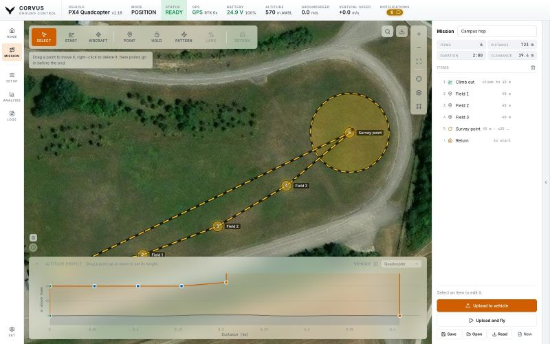
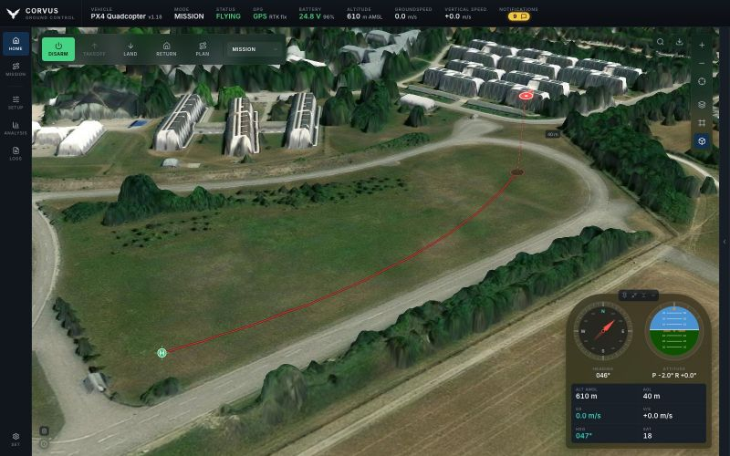
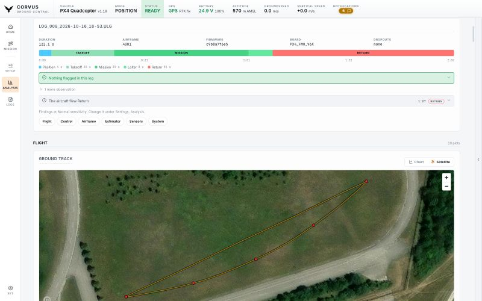

Fast connect
On connect only what flying needs streams in. Parameters load when you open them.
Ground control station for PX4 and ArduPilot
Plan, fly and review autonomous flight in one program. It runs on a laptop with a telemetry radio and needs no internet connection.

Set up, plan, fly and review without switching tools.




Set up
First Setup walks a new controller through firmware, frame, calibration, radio, safety and battery, in any order.
First SetupPlan
Draw the route, read it as an altitude profile against the terrain, upload it and fly.
Mission plannerFly
Real terrain, OpenStreetMap buildings and the aircraft at its true altitude.
Map, HUD and flight controlsReview
Download the ULog over MAVLink and read it in the built-in Flight Review. Nothing leaves your machine.
Logs and Flight ReviewEverything listed here is implemented.
On connect only what flying needs streams in. Parameters load when you open them.
Every vehicle gets its own link, colour and track on one map. Take control in one press.
Live Messages lists every MAVLink message with its rate and live fields. Every parameter is explained.
Nothing loads from the internet. Download regions with their elevation ahead of time and fly without a connection.
Multicopters, planes, rovers and boats on PX4 and ArduPilot. Every page shows what that firmware really has. Betaflight is in beta: its telemetry, and a read only look at the controller.
Four plugins ship with Corvus, written in Rust against its plugin API. An AI client can join over MCP, as far as you allow it.
English, German and French, switched with no restart. A language is one file.
Load your own GeoTIFF, XYZ or ESRI ASCII grids, such as a 20 cm survey surface model. Every tree and roof stands in the 3D map.
Parameter writes, motor tests, flashing and ESC calibration are refused while armed. A refused write is never shown as applied.
29 screenshots from simulated flights. They play through on their own: pick one, use the arrows or press pause to stop.
Map, mission, geofence and workspace.
Calibration, radio, tuning, motors, safety and parameters.
Logs read on this computer and every message on the link.
Four ship with Corvus and run beside the map.
Real interface, real MAVLink, simulated aircraft, Neubiberg test site. All six themes appear.
One native Rust program, backend inside. No server, no browser.
| Autopilots | PX4 v1.16 to v1.18, ArduPilot 4.3 to 4.6 (Copter, Plane, Rover, Boat, Sub). Betaflight 4.x is in beta: telemetry over MAVLink, for example an ExpressLRS link, and the controller read over MSP. Several vehicles at once. |
|---|---|
| Links | MAVLink over serial, UDP, TCP or WebSocket. What is plugged in is found automatically, with link quality and reconnect. |
| RTK GPS | A plugged in base station is surveyed in and RTCM 3 corrections stream to the aircraft. NTRIP works too. |
| Video | RTSP cameras (decoded with ffmpeg) in floating windows for a second screen. A frozen picture is never passed off as live. |
| Maps & 3D | 6 map services with 20 layers, a 3D map with terrain and OpenStreetMap buildings, and an offline tile store. Your own surface models load as the ground. |
| Flight logs | ULog .ulg review in Flight Review. ArduPilot .bin downloads but is not parsed. Corvus's own recording reviews on both stacks. |
| Tools | MAVLink console, SSH terminal, an MCP server for AI clients, and four plugins: Vibration Monitor, SSH Launcher, Schwalby and Map Entities. |
| Platforms | macOS 12 or later .dmg, Linux x86_64 .AppImage, Windows x64 .zip. Nothing else to install. |
| From source | A Rust toolchain and ./run.sh. egui on OpenGL. |
| License | Sustainable Use License 1.0 (fair-code). Open to read and modify, not to resell. |
The ground stations I used loaded every parameter first, felt slow on a field laptop and left log review to other tools. I wanted one that is ready in seconds, reviews flights itself and can be extended with plugins.
In my day-to-day work as a PhD researcher there is very little room for AI-assisted, "vibe-coded" development, because the setting simply does not allow for it. That method is nonetheless becoming a real part of how software gets built, and the only honest way to find out where it works, where it breaks, and how to direct it well is to use it seriously on something non-trivial.
Download the latest release or read the source.
Releases are published on GitHub.